Skatepark Gleisdreieck Bowls Berlin - Germany
Inside Gleisdreieck Park in Berlin, there are various skate locations. Therefore, make sure to double-check when you Google the location to find the one with the bowls. The “Green Waves” is another interesting spot in that area, but it will be covered in a different blog post.
There are two bowls. The smaller one has coping all around, while the bigger bowl features a deep end, a love seat, a cradle, and a roll-in. The love seat can be extremely annoying or dangerous, depending on your skating skills. Almost every skater complains about it.
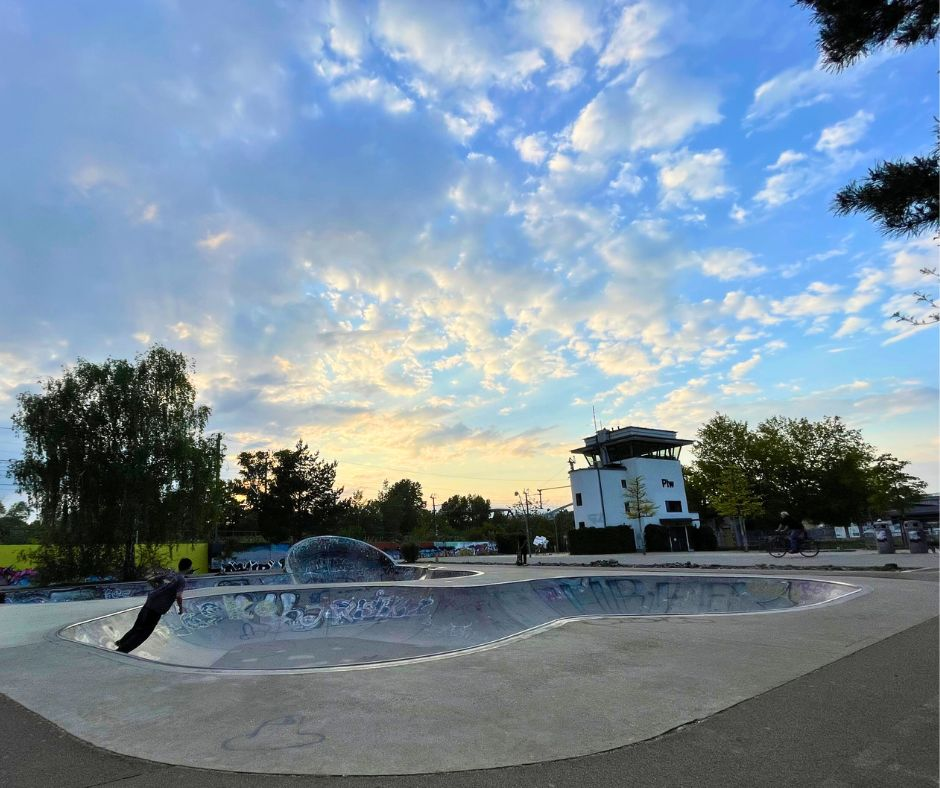
Scooter kids adore this location and occasionally, you’ll also find some BMX enthusiasts there. For this skatepark, it’s advisable to arrive early. However, be aware that school classes sometimes visit this place and the kids play in the bowls.
The atmosphere at this spot is generally relaxed as it only features bowls. You’ll often encounter a bunch of roller skaters there as well.
📍 Location
🗺️ Gleisdreieck - Skatepark, 10963 Berlin, Germany
Suburb: Kreuzberg
🔗 Google Maps: Skatepark Gleisdreieck Bowls Berlin
🚆 Public transport: U Gleisdreieck
🌐 Social Media
- 🎥 YouTube Shorts: Video of me doing a roll in in the big bowl on my skateboard
- 🎥 YouTube Shorts: Video of me dropping into the small bowl on a surfskate
- 🎥 YouTube video: Drone video of the bowls by “danzn video”
🥣 Bowl
There are two bowls, and you can select the one that best suits your skill level. The drop into the smaller bowl is especially pleasant due to its more mellow transition. The following two images show the small bowl:
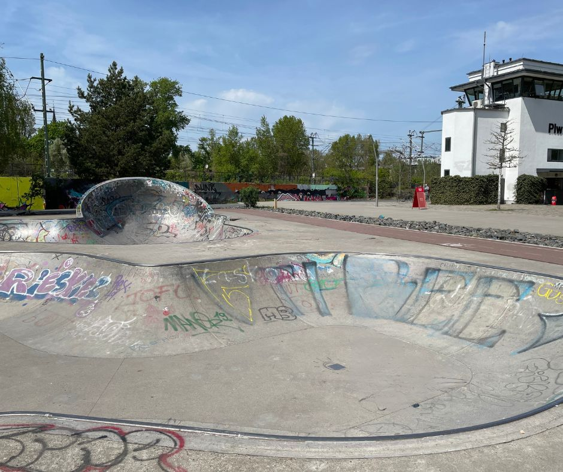 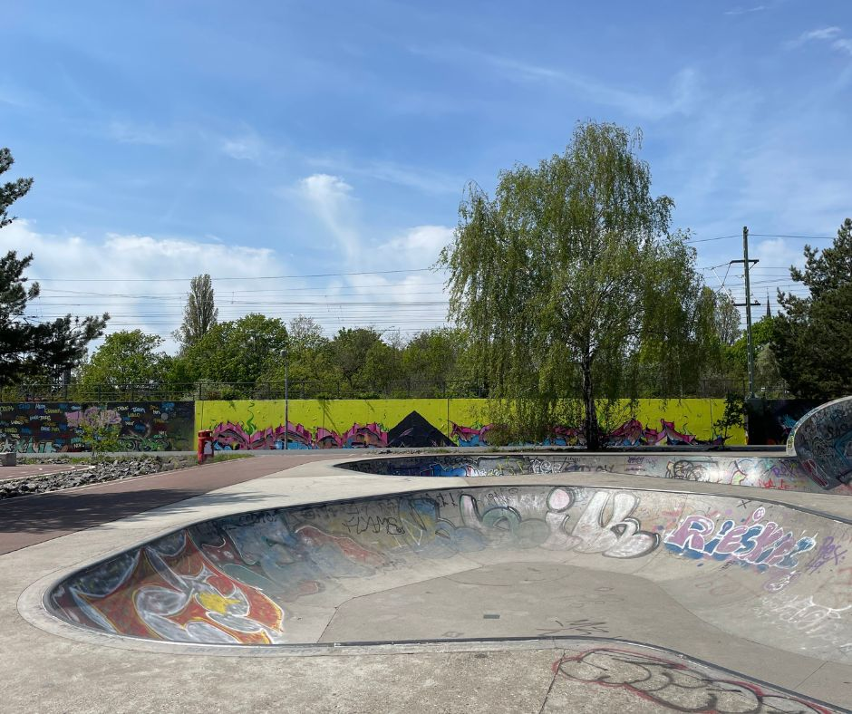
The larger bowl also features a roll-in. The following images are still shots from my roll-in video: 🎥 YouTube Shorts: Video by me doing a roll in in the big bowl on my skateboard
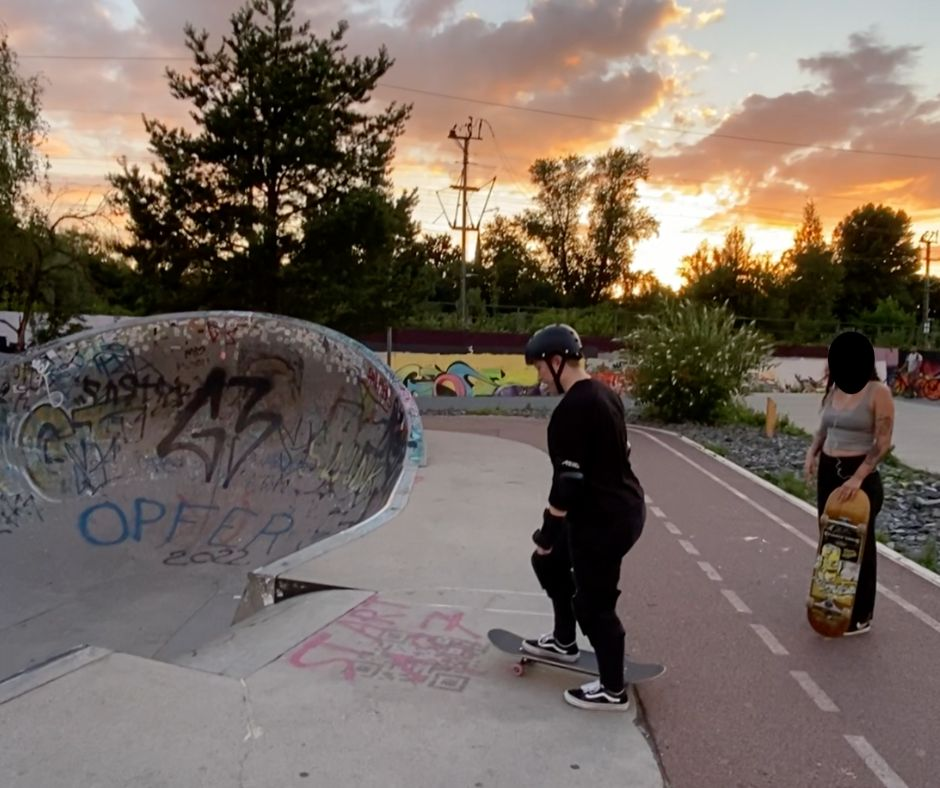 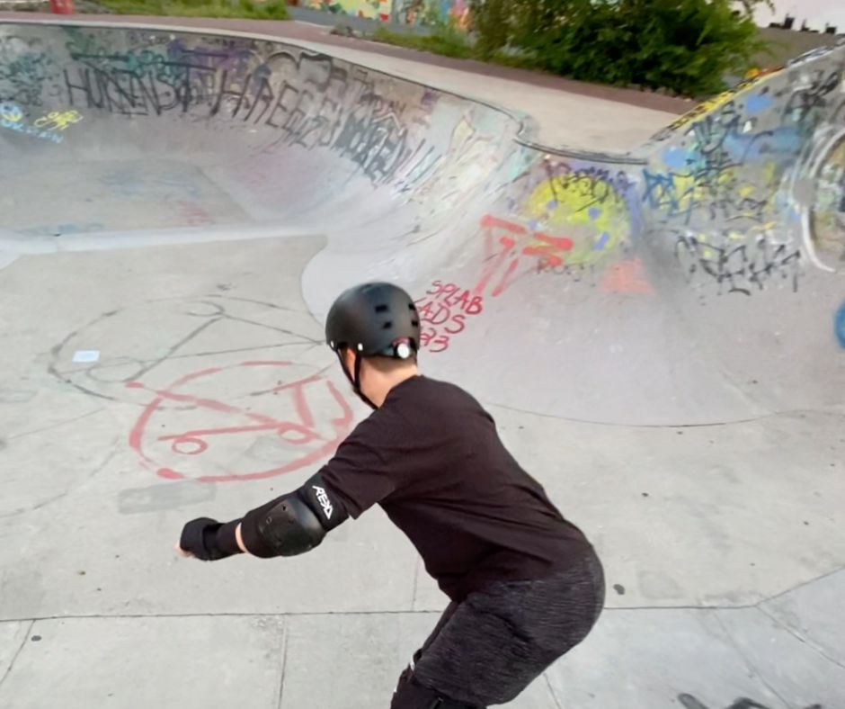
Be cautious of the love seat after you’ve gained considerable speed in the deep end of the larger bowl.
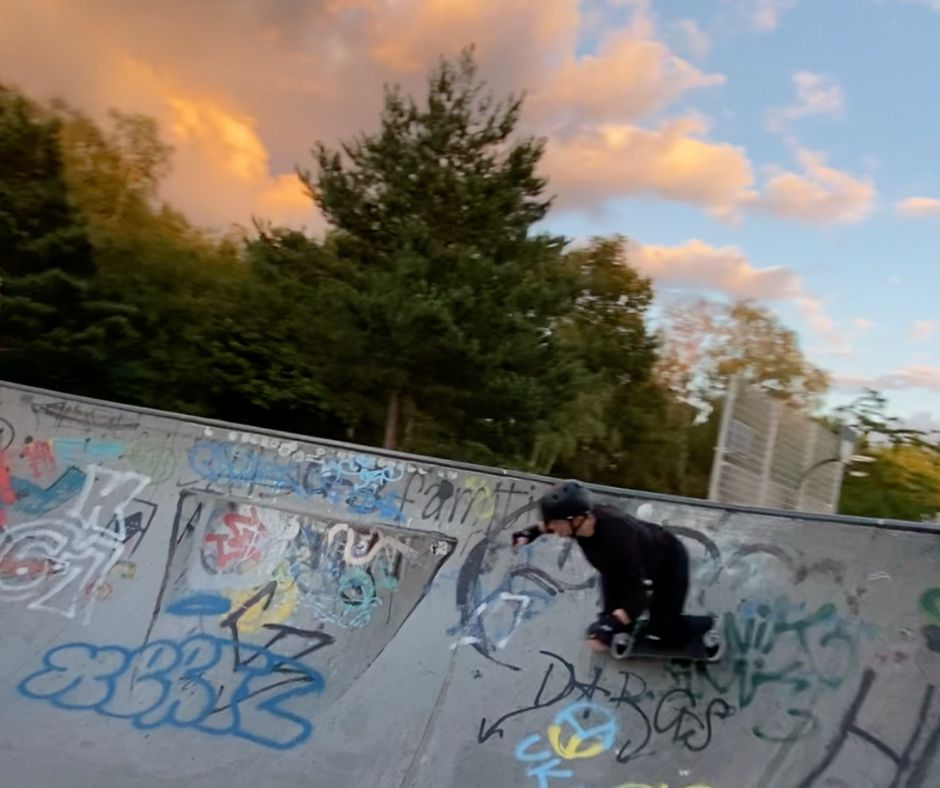 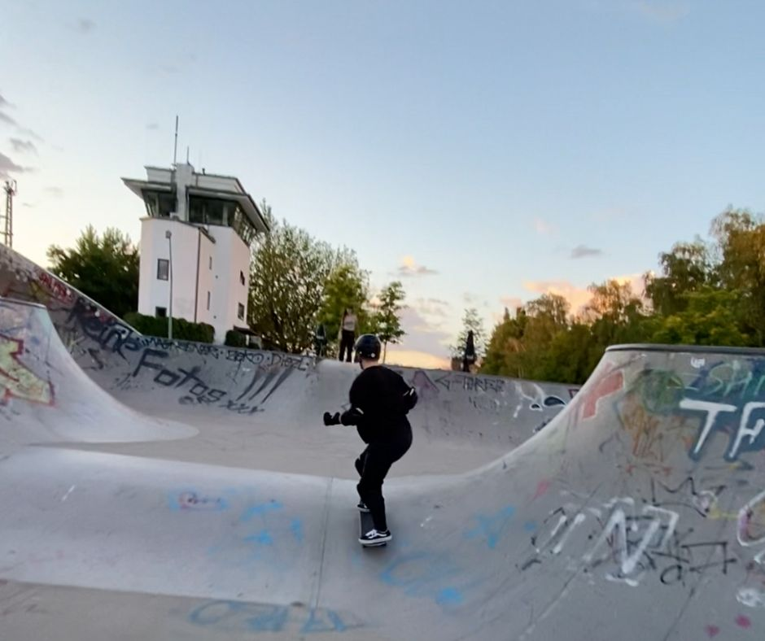
Here is a photo of a still shot from this Drone Video by “danzn video”:
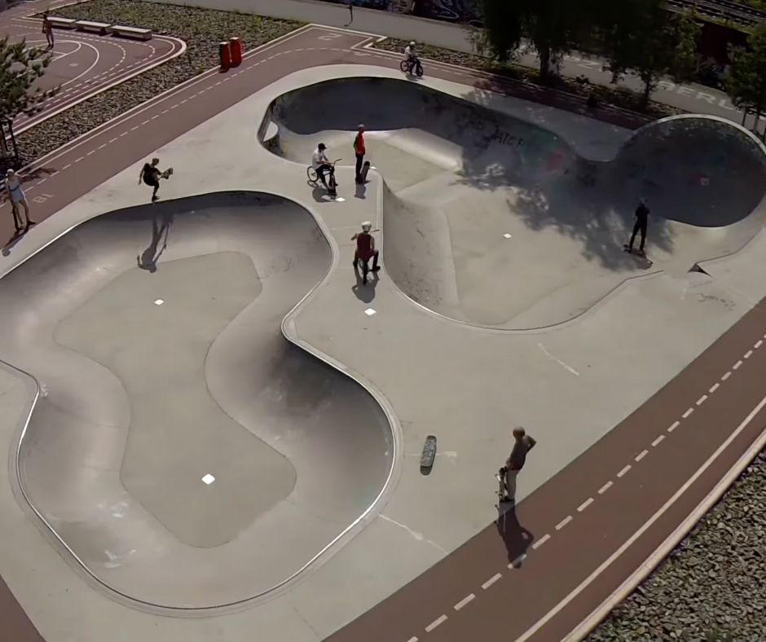 Image (c) by “danzn video”
🌲 Area & Necessities
The skatepark is located inside the Gleisdreieck park. The park is a public urban park located in the Kreuzberg district, it was a former railway wasteland which has been converted into an urban park after being unused for many years. The name “Gleisdreieck”, which translates as ‘railway triangle’ or ‘railway junction’, alludes to the area’s historical function as a major junction in the city’s railway network.
During summer, it is wonderful to relax in the park. There is an outdoor beer garden from the BRLO Brewhouse nearby, or you can purchase drinks and snacks from the kiosk next to the bowls.
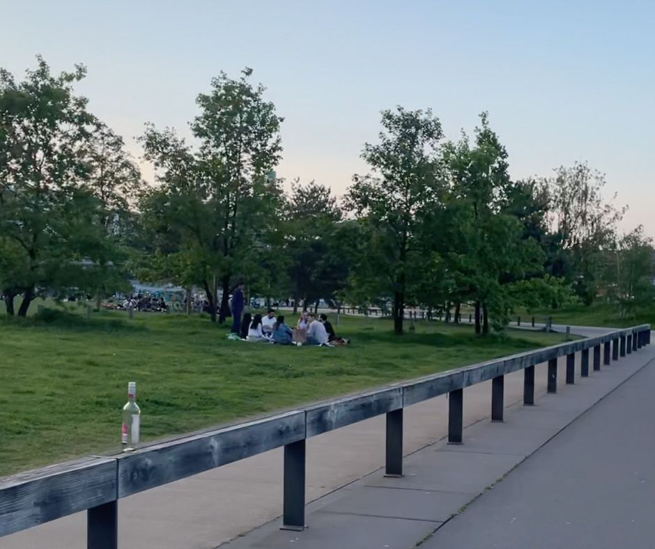 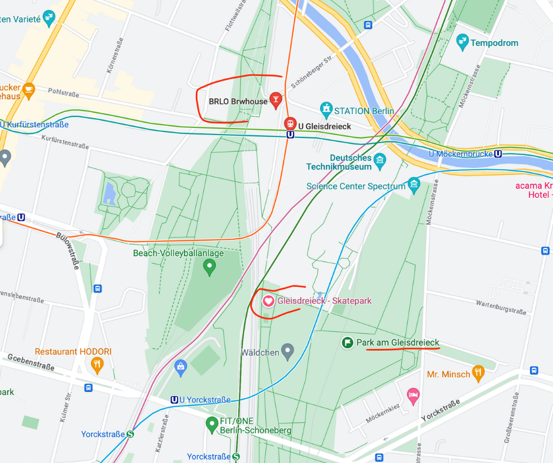
The park is located in Kreuzberg which is a district of Berlin, known for its diverse culture, vibrant nightlife, and historical landmarks. When I was riding the subway to Warschauer Straße from the U Gleisdreieck, I noticed several people wearing stylish and unique outfits.
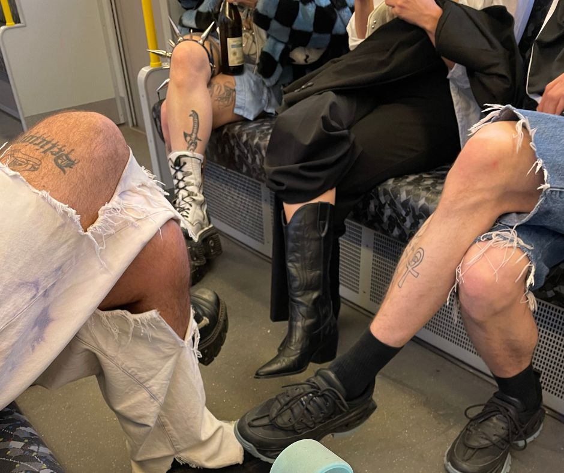
🚽 During the summer, there are nearby restaurants where you probably could to use the restrooms. Although I believe there are public restrooms somewhere in Gleisdreieck Park, I’ve never used them, so I can’t confirm their exact location.